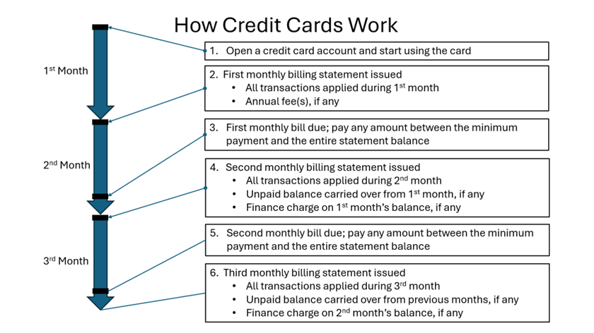
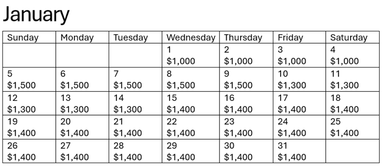
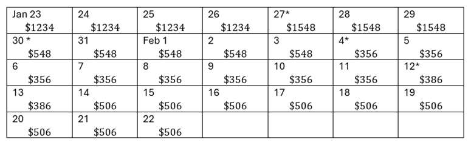

Credit cards are a common source of debt. The Federal Reserve Bank reported that in the second quarter of 2024, Americans owed $1.14 trillion in credit card debt, which is an average of about $4,400 per adult. In this section, we will investigate how credit cards work with the goal of empowering readers to make educated financial decisions.
Objectives
Students will be able to:
Identify rates and fees in the "fine print" of credit card agreements.
Calculate ending balance, starting balance, and average daily balance.
Calculate credit card finance charges using the unpaid balance method, the average daily balance method, and the daily balance method.
Analyze credit card terms to identify the best options for different types of consumers.
Subsection3.3.1What is a Credit Card?
A credit cards is a form of revolving debt. With most loans, such as mortgages or car loans, the money is borrowed all at once and paid back with interest over time. With credit cards, borrowers use the card to make purchases, and they pay back some or all of the amount borrowed each month, and this cycle of borrowing and making payments continues until the account is closed.

Figure3.3.1.Diagram of three monthly billing cycles of a credit card.
Credit card accounts are unique in that if the borrower pays the entire statement balance each month, there is no interest charged on purchases made using the card. Further, many cards offer rewards to the consumer in the form of cash back, points or miles in rewards programs, or even reducing the balance of a home loan! On the other hand, the if the borrower is unable to pay the entire statement balance each month, they begin to accrue finance charges, which are calculated using the simple interest formula. The interest rates on credit card accounts tend to be significantly higher than those for other types of loans, so borrowers can find themselves amassing a large amount of debt quite quickly.
Subsection3.3.2Credit Card Balances
The term balance indicates the amount of money owed on a credit card at a given time. It is used in several different ways in the context of credit cards. In the credit card agreement, the section "How We Calculate Your Balance" will indicate which of the various balances are used for calculating finance charges. Some of the more commonly encountered types of balance are as follows:
The starting balance is the balance at the beginning of a cycle. The starting balance is also called the previous balance or the opening balance. It is the amount shown on the previous billing statement as the total amount owed at the end of the previous billing cycle.
The ending balance is the balance at the end of a cycle. The ending balance is the amount owed at the end of a billing cycle before finance charges or other fees have been applied. It is calculated by starting with the previous balance, adding any purchases made during the billing cycle, and subtracting any payments made during the billing cycle. The ending balance is used in the unpaid balance method of calculating finance charges.
The statement balance is the total amount shown on the billing statement. It is the sum of the ending balance and any finance charges or fees that are applied at the end of the billing cycle. The statement balance is the amount that a consumer must pay by the due date to avoid finance charges on new purchases.
The daily balance is the total balance at a given time. Also called the current balance, it incorporates any unpaid debt carried over from the previous billing cycle and any activity (purchases, payments, etc.) that have been posted to the account. The daily balance is used in the daily balance method of calculating finance charges.
The average daily balance is the average of the current balances on each day of a billing cycle. It is calculated by adding up the daily balances for each day of the billing cycle and then dividing by the number of days in the billing cycle. The average daily balance is used in the average daily balance method of calculating finance charges.
The payoff balance is the total amount a consumer would have to pay to close out the account. It is the sum of the current balance and any prorated finance charges that have accumulated but not yet been applied. A prorated finance charge is also called residual interest. The payoff balance is important for consumers to understand because if they pay off their credit card account, they may still owe some money in the form of residual interest, which can be a surprise. This is because the finance charge is typically applied at the end of the billing cycle, so if a consumer pays off their balance before the end of the cycle, they may still owe interest for the time that has passed since their last statement. Consumers can avoid this surprise by asking their credit card company for a payoff balance, which will include any residual interest, before making a payment to close out the account.
Summary of Balance Types.
Starting Balance: the amount of debt carried over from the previous month.
Ending Balance: the amount owed at the end of a billing cycle before finance charges or other fees have been applied.
Statement Balance: the total amount shown on the billing statement. It is the sum of the ending balance and any finance charges or fees that are applied at the end of the billing cycle.
Daily Balance: the balance on the account on a particular day.
Average Daily Balance: the average of the balances on each day of a billing cycle.
Payoff Balance: the total amount a consumer would have to pay to close out the account.
The next several examples will illustrate how to calculate the ending balance and the average daily balance. Statement and daily balance calculations are demostrated in the next portion of this section on finance charges.
The ending balance is calculated by starting with the previous balance, adding any purchases made during the billing cycle, and subtracting any payments made during the billing cycle. It does not include any finance charges or fees that are applied at the end of the billing cycle.
Example3.3.2.
A credit card account has the following transactions during the billing cycle: a $500 purchase on January 5, a $200 payment on January 10, and a $100 purchase on January 15. The billing cycle runs from January 1 to January 31. Assume that the previous balance was $1,000 and that a finance charge of $25 is applied at the end of the billing cycle. What is the ending balance for the billing cycle before finance charges are applied?
To find the ending balance, we start with the previous balance and add any purchases and subtract any payments. The transactions are as follows:
Previous Balance: $1,000
January 5 Purchase: +$500
January 10 Payment: -$200
January 15 Purchase: +$100
Therefore, the ending balance is calculated as follows:
Thus, the ending balance for the billing cycle is $1,400.
When calculating the average daily balance, we find the current balance for each day of the billing cycle and then find the average of those balances. Be careful: this is a weighted average, not a simple average. The balance on each day is weighted by the number of days that balance was held. It can be helpful to write the balances in a calendar or grid to keep track of the balance on each day of the billing cycle. A spreadsheet can also be used to calculate the average daily balance.
Example3.3.3.
Calculate the average daily balance for the credit card account from the previous example, which has a starting balance of $1,000 and the following transactions during the billing cycle: a $500 purchase on January 5, a $200 payment on January 10, and a $100 purchase on January 15. The billing cycle runs from January 1 to January 31.
We will write the balance for each day of the billing cycle in a calendar.

Now we can find the average of the balances in each day of the cycle. We will use multiplication for the repeated addition, and we note that there are 31 days in the billing cycle.
Therefore, the average daily balance is approximately $1,348.39.
Subsection3.3.3Finance Charges
A finance charge is the interest charged on the amount owed. It is calculated as the simple interest on the balance on the account. However, there are several ways this can be done. Each credit card agreement will indicate which method is used. Some of the more common approaches are as follows:
Unpaid Balance Method: The finance charge is calculated using the ending balance. The amount of interest is calculated at the end of the billing cycle and added to the statement balance.
Average Daily Balance Method: The finance charge is calculated using the average daily balance. The amount of interest for each day is calculated and then added together at the end of the cycle.
Daily Balance Method: The finance charge is calculated using the current balance on each day of the billing cycle. The amount of interest is calculated and added each day.
Subsubsection3.3.3.1Unpaid Balance and Average Daily Balance Methods
The unpaid balance method and the average daily balance method are similar in that the finance charge is calculated at the end of the billing cycle. The difference is that the unpaid balance method uses the ending balance to calculate the finance charge, while the average daily balance method uses the average daily balance.
To complicate matters just a bit, the time period used in the simple interest formula can be measured in different ways. Some credit card agreements calculate interest based on the number of days in the billing cycle, while others use one month as one twelfth of a year.
Example3.3.4.
Suppose that a credit card account has an ending balance of $1,400 and an annual percentage rate of 18%. If the finance charge is calculated using the unpaid balance method based on the ending balance with the time period measured in one month as one twelfth of a year, find the finance charge and statement balancefor the billing cycle.
To find the finance charge, we use the simple interest formula with the ending balance as the principal, the annual percentage rate as the rate, and one month as one twelfth of a year as the time period.
\begin{align*}
I \amp= Prt \\
I\amp=1400(0.18)\left(\frac{1}{12}\right) \\
I \amp= 21
\end{align*}
Therefore, the finance charge for the billing cycle is $21.
To find the statement balance, we add the finance charge to the ending balance: \(1400+21=$1421\text{.}\)
Therefore, the statement balance for the billing cycle is $1,421.
Example3.3.5.
Suppose that the same credit card account from the previous example uses the unpaid balance method but measures time in days instead of months. Find the finance charge and statement balance for the billing cycle.
To find the finance charge, we use the simple interest formula with the ending balance as the principal, the annual percentage rate as the rate, and the time period measured in days. The time period is 31 days (January 1 to January 31).
\begin{align*}
I \amp= Prt \\
I\amp=1400(0.18)\left(\frac{31}{365}\right) \\
I \amp\approx 21.34
\end{align*}
Therefore, the finance charge for the billing cycle is approximately $21.34.
To find the statement balance, we add the finance charge to the ending balance: \(1400+21.34\approx$1421.34\text{.}\)
Therefore, the statement balance for the billing cycle is approximately $1,421.34.
Example3.3.6.
A credit card billing period runs from January 23 to February 22. The previous balance is $1,234 and the transactions are listed below.
Date
Description
Charge/Credit
Jan 27
Mathematical Hardware
$314
Jan 30
Payment—Thank You
$1,000 (cr)
Feb 4
Not Great Clothing (Returns)
$192 (cr)
Feb 12
Yummy Chocolate
$30
Feb 14
Fancy Restaurant
$120
Suppose this credit card uses the average daily balance method and charges an annual interest rate of 19.6%. Find the finance charge and statement balance if this account measures time in days.
Solution.
We will use a grid as a tool to calculate the average daily balance.

Now we can find the average of the balances in each day of the cycle. We will use multiplication for the repeated addition, and we note that there are 31 days in the billing cycle.
The finance charge is 31 days simple interest on the average daily balance at 19.6%.
\begin{align*}
I \amp= Prt \\
I\amp=649.55(0.196)\left(\frac{31}{365}\right) \\
I \amp\approx 10.81
\end{align*}
Therefore, the finance charge will be $10.98.
To find the total amount owed, we add the ending balance and the finance charge to obtain the statement balance: \(386+10.81=$396.81\text{.}\)
Many credit card agreements describe the interest calculation using a daily rate, which is the annual percentage rate divided by 365. For example, consider the credit card account from the previous example, which has an average daily balance of approximately $649.55 and an annual percentage rate of 19.6%. The finance charge can be calculated using the daily rate as follows:
\begin{align*}
I\amp =P\left(\text{Daily Rate}\right)\left(\text{Number of days}\right)\\
I \amp= 649.55\left(\frac{0.196}{365}\right)\left(31\right)\\
I \amp\approx 10.81
\end{align*}
The finance charge is the same as the previous calculation.
Subsubsection3.3.3.2Daily Balance Method
With the daily balance method, finance charges are calculated daily using the current balance on each day of the billing cycle. The amount of interest is calculated and may be added each day. This method can be more complicated to calculate, but it enables the lender to charge interest on new purchases more quickly than the other methods, and it enables variable interest rates to be changed more frequently.
To calculate the finance charge using the daily balance method, we find the current balance for each day of the billing cycle and then calculate the interest for each day. The interest for each day is calculated using the simple interest formula with the current balance as the principal, the daily rate as the rate, and one day as the time period. The total finance charge is then found by adding up the interest for each day of the billing cycle.
Example3.3.7.
Consider the same credit card account which has a starting balance of $1,000 and the following transactions during the billing cycle: a $500 purchase on January 5, a $200 payment on January 10, and a $100 purchase on January 15. The billing cycle runs from January 1 to January 31, and the annual percentage rate is 18%. Using the daily balance method, we will calculate and apply the finance charge each day of the billing cycle. This is a more complicated calculation, so it’s recommended to use a spreadsheet to keep track of the balances and interest for each day of the billing cycle.
We will label the columns of the spreadsheet as follows: Date, Starting Balance, Transactions, Ending Balance, and Finance Charge. The starting balance for January 1 is $1,000 and there were no transactions, so the daily balance is $1,000. Note that the ending balance is the daily balance that is used to calculate the finance charge.
Using the simple interest formula with \(P=\$1\,000\text{,}\)\(r=0.18\text{,}\) and \(t=\frac{1}{365}\text{,}\) we get:
\begin{align*}
I \amp= Prt \\
I\amp=1000(0.18)\left(\frac{1}{365}\right) \\
I \amp\approx 0.49
\end{align*}
Therefore, the finance charge for January 1 is approximately $0.49.
You may have noticed that \(0.18\cdot \left(\frac{1}{365}\right) = \frac{0.18}{365}\text{.}\) In practice, instead of calculating the daily finance charge using the simple interest formula, credit card companies typically calculate the daily finance charge by multiplying the current balance by the daily rate, which is the annual rate divided by 365 or \(\frac{r}{365}\text{.}\)
The spreadsheet or table for the first day of the billing cycle is shown below.
The starting balance for January 2 is the ending balance from January 1 plus the finance charge from January 1, which is $1,000 + $0.49 = $1,000.49. We can then calculate the finance charge for January 2 using the same method.
We continue this process for each day of the billing cycle, calculating the starting balance, transactions, ending balance, and finance charge for each day. The resulting Daily Balance Method Spreadsheet 1
shows that the ending balance on January 31 is $1,420.06 which would be the statement balance for the month.
The statement sent to the consumer will not show the daily finance charges, but it will show the sum of the finance charges for the billing cycle as a single finance charge at the end of the cycle. In this example, the total finance charge for the billing cycle is $20.06. It does not include the finance charge for January 31 because that charge will be applied to the February 1 balance.
Note3.3.10.
Credit card companies are required to disclose the method used to calculate finance charges in the credit card agreement, sometimes hidden in the "fine print". Consumers may enncounter additional variations of the methods described above, so it is important to read the credit card agreement carefully.
Subsection3.3.4Payoff Balance
The payoff balance is the total amount a consumer would have to pay to close out the account. It is the sum of the current balance and any prorated finance charges that have accumulated but not yet been applied. A prorated finance charge is also called residual interest. It is important for consumers to understand that if they pay off their credit card account, they may still owe some money in the form of residual interest, which can be a surprise to many people. This is because the finance charge is typically applied at the end of the billing cycle, so if a consumer pays off their balance before the end of the cycle, they may still owe interest for the time that has passed since their last statement. Consumers can avoid this surprise by asking their credit card company for a payoff balance, which will include any residual interest, before making a payment to close out the account.
One common approach to calculate the payoff balance is to prorate the finance charge based on the number of days from the beginning of the billing cycle to the payoff date. Some credit card companies may use the unpaid balance or average daily balance method for calculating monthly finance charges but convert to the daily balance method for calculating the payoff balance.
Example3.3.11.
A credit card account has a starting balance of $572 on August 3. The billing cycle runs from August 3 to September 2. The annual percentage rate is 24% and finance charges are calculated using the average daily balance method. If the consumer makes a purchase of $152 on August 10 and then pays off the account on August 20, what is the payoff balance?
To find the payoff balance, we first need to calculate the average daily balance from August 3 to August 20. The balance is $572 for the 7 days from August 3 to August 9, and $724 for the 11 days from August 10 to August 20. The resulting average daily balance is:
\begin{gather*}
\end{gather*}
Therefore, the average daily balance from August 3 to August 20 is approximately $672.89.
Using the simple interest formula with \(P=672.89\text{,}\)\(r=0.24\text{,}\) and \(t=\frac{18}{365}\text{,}\) we get:
\begin{align*}
I \amp= Prt \\
I\amp=672.89(0.24)\left(\frac{18}{365}\right) \\
I \amp\approx 7.98
\end{align*}
Therefore, the prorated finance charge is approximately $7.98.
Alternatively, we can multiply the average daily balance by the daily rate and the number of days to find the prorated finance charge:
\begin{align*}
I\amp =P\left(\text{Daily Rate}\right)\left(\text{Number of days}\right)\\
I \amp= 672.89\left(\frac{0.24}{365}\right)\left(18\right)\\
I \amp\approx 7.98
\end{align*}
In both cases, the prorated finance charge is approximately $7.98.
The payoff balance is the sum of the current balance and the prorated finance charge: \(724+7.98\approx 731.98\text{.}\) Therefore, the payoff balance is approximately $731.98.
Exercises3.3.5Exercises
1.
In general, how can credit-card users avoid finance charges?
2.
What are the two most commonly used methods of calculating balances that will be used for finance charges?
3.
Read the fine print of a credit card agreement and identify the method used to calculate finance charges, the annual percentage rate, and any fees that may be applied to the account. If you do not have a credit card, you can find sample agreements at the websites of credit card companies or the Consumer Financial Protection Bureau.
4.
Suppose you have a credit card with an average daily balance of $2,500 and an annual percentage rate of 15%. Calculate the finance charge for a 30-day month if the charge is calculated using each method.
Based on the number of days in the billing period.
Based on one month as one twelfth of a year.
5.
A credit card billing period runs from March 1 to March 31. The previous balance is $800 and the transactions are listed below.
Date
Description
Charge/Credit
Mar 5
Gadget Store
$200
Mar 10
Payment—Thank You
$300 (cr)
Mar 15
Clothing Store
$150
Mar 20
Restaurant
$50
Suppose this credit card uses the average daily balance method and charges an annual interest rate of 18%. Find the ending balance, the average daily balance, the finance charge, and the total balance after the finance charge is applied. For calculating the finance charge, this account measures time in days.